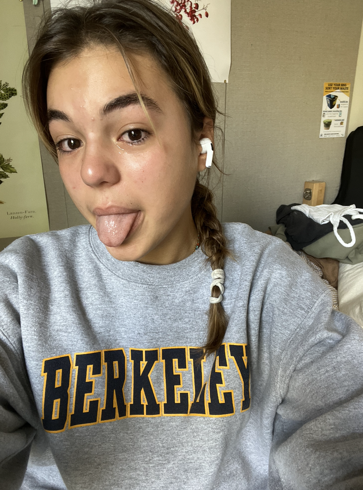
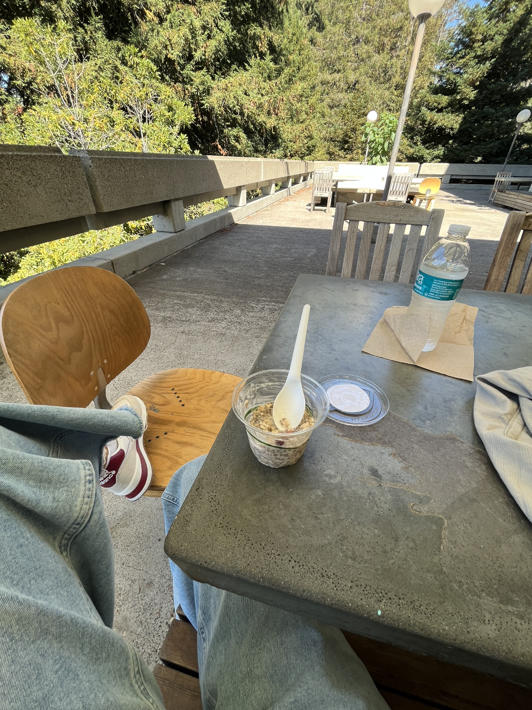

Şu son iki gündür homesick hissetmeye başladım. Bir ay hiç ama hiç bir şeyi ve birini nasıl özlemedim diye şaşırıyodum. Ne oldu da Türkiye flashbackleri yaşamaya başladım bilmiyorum. Geçen bir frat partisinde frat flu kaptım. Hayatımda böyle hasta olmadım. Neyse hasta olduktan sonra bi ev özlemi geldi. Ev değil de Türkiye havası özlemi sanırım. Bayadır kaçırdığım bi dersi de kaçırdım diye baya sinirim bozuldu ağlamaya başladım. İnsanlar çaresiz hissedince homesick oluyo sanirim. Arasında bi ilişki olduğuna eminim yani. 
Dün, Cuma, baya partiledik ve hep daha ne kadar sarhoş olabilirim diyorum ve bi sonraki haftasonu 2 katı oluyorum. Baya sarhoştum nasıl uyudum bilmiyorum bile. Uyurken Rachel'a "I miss Turkey" dediğimi hatırlıyorum. ilk kez.
Şuan game day, ama ben tüm eglencemi aksam harcadim gitmiycem game'e. Aynı zamanda parents day. Hani zaten ilk kez özlemeye başlamışken bu da tuzu biberi :) Sağda solda aileler, herkes köpeklerini getirmiş, resmen bizim İstanbul/İzmir ailecek gezmelerimiz gibi aileler süslenip giyinip buraya geliyo. #international 
Suan Moffit'te bunu yaziyorum ve tam bu saniye yanıma bi aile oturdu. love that! Rex Orange County-bayildim. Niye daha once kesfetmemisim. nasil?!!